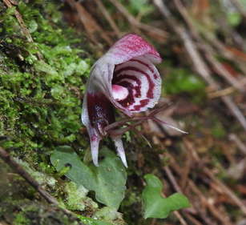

Exercise 2: Linear Regression
NRES 710
Last compiled: 2024-07-29
Linear Regression Analysis in R
For each of the following datasets, run a regression analysis in R using the ‘lm()’ function. Report your results in a Word Document using the following template, which we discussed in class:
For each 1 [x-unit] increase in [x], we observed a [slope][y-unit](+/-[95% C.I.], +/-95% C.I.) [increase/decrease] in [y] (p = [p-value]; r^2 = [r^2]).
If your results are not statistically significant, be sure to say so in your results sentence. Also, be sure to report the exact p-value; don’t use p < 0.0001. Finally, plot the data and the best-fit line to the data.
Compile all of your results in a Word document. This will be one sentence and one graph for each of the three problems; I don’t need anything else. Load this into the WebCampus assignment portal and submit it by the due date indicated in the course schedule.
Dataset 1
In this dataset, you are interested in examining the relationship between the density of Ctenus sp. (wandering spiders; y-variable – spiders / sq. meter) as a function of the density of small frogs (x-variable; frogs / sq. meter). For those that are interested, in many tropical rainforests these wandering spiders are major predators of small, terrestrial frogs. Assume that you were in Costa Rica and you captured all of the spiders and frogs you could find in independent rainforest plots (10 \(m^2\)). You calculated the density of each type of spider (spiders/sq. meter area). What is the relationship between frog and spider density?

Picture: Witold Lapinski
Dataset 2
In this dataset, you are testing the relationship between the size of a particular orchid flower (y-variable; diameter in cm) as a function of the elevation it is growing in the Andes Mountains in Peru (x-variable; meters). You’ve hiked from the lowland Amazon rainforest (50 m asl) and scaled up the treeline (3000 m), and along the way you collected almost 500 flowers. Note: in this dataset, the slope is very small. For reporting purposes, it is entirely acceptable to scale the slope that you report. Just multiply the change in X (in the standard sentence, it’s just 1), the slope, and the confidence intervals all by the scaling factor that you choose to use.

Picture: Chen Shu (iNaturalist)
Dataset 3
Palmer’s chipmunks (Neotamias palmeria) is an endemic species of chipmunk that occurs in sky-island habitats in southern Nevada. In this dataset, you are interested in the relationship between the amount of time spent foraging by N. palmeria (y-variable; minutes/day) as a function of number of predatory birds observed in the area on the preceding day (x-variable; predators/day). You recorded the amount of time spent outside the burrow by each of ten squirrels over the course of two weeks, as well as the number of birds of prey that flew over that colony. Note: be careful with which variable is X and which is Y.
Picture: Jason M Crockwell (iNaturalist)
— End of Exercise 2 —